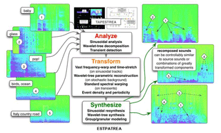

Breadth or Depth?
Princeton’s soundlab has a couple of really interesting audio hacking tools that we’ll get to soon. But I was struck by something on the docs page for Tapestrea. Notice the part that says: online user guide (pick one): breadth-first | depth-first. What a novel idea!
Unfortunately, these two links each lead to a bland table of contents. Both have virtually the same links jumbled in order. Still: branching in education is plain old Tim Toady.

I guess my expectation was that the breadth-first link would have a cheater’s diagram that sums everything up, sort of like the first page of an owner’s manual, with arrows and what’s what. Or those peel-away diagrams of the human body that come in really expensive encyclopedias. An expanded version of the Tapestrea diagram (pictured here) from the home page.
The depth-first link could take you straight to the code. Or some hands-on tutorial. Don’t explain anything, just get me INTO IT!! And then, both depth and breadth would converge into a longer walkthrough.
You know what? I really like it when something fails to meet my expectations! It wakes me up to what things could be in store for the future, you know??

Comments are closed for this entry.